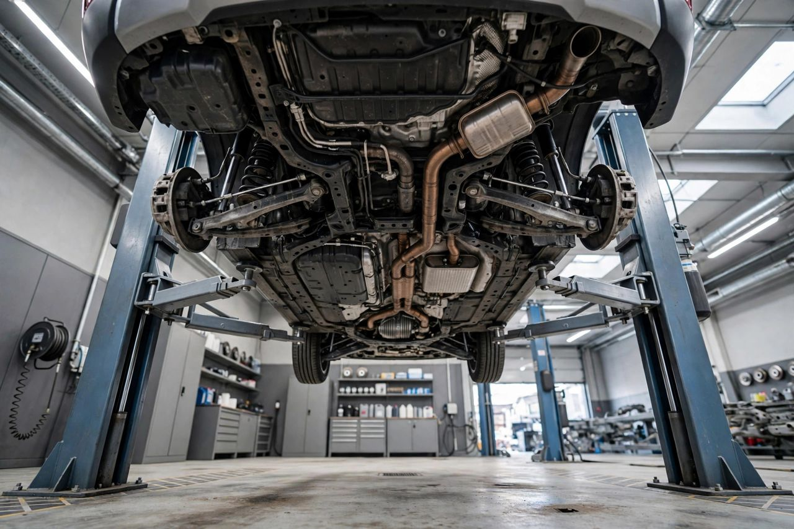

Advanced Eco Laser Cleaning & Corrosion Protection
Professional laser cleaning, underbody rust removal and corrosion protection for vehicles, from our workshop in County Clare.
Laser technology precisely removes rust, corrosion, paint and surface contaminants without abrasive blasting media or chemical stripping agents, with minimal mess and waste. Our fully mobile service brings the same equipment and expertise directly to your premises.

A cleaner, more controlled way to restore surfaces
Modern laser cleaning technology, professional surface preparation and high-performance protective coatings, for quality results and long-lasting protection.
Precise Removal
Rust, corrosion, paint and unwanted contaminants are removed precisely from suitable materials, only where treatment is needed.
No Abrasive Blasting
No traditional abrasive blasting media and no chemical stripping agents, so surrounding components and surfaces stay protected.
Minimal Mess & Waste
Unlike conventional cleaning methods, laser cleaning produces minimal mess and waste, offering a cleaner, more controlled process.
Environmentally Conscious
An environmentally conscious alternative to methods that rely on chemical stripping or abrasive materials.
Two services, one standard of workmanship
Quality workmanship, attention to detail and customer satisfaction, whether the work happens at our workshop or on your site.

Underbody Restoration & Protection
Specialist vehicle underbody rust removal and long-term corrosion protection, following a documented ten-step process.
- Full vehicle underbody inspections
- Laser rust and corrosion removal
- Epoxy primer and protective coatings
- Cavity waxing
- Suspension and chassis component restoration

Mobile Laser Cleaning
Professional on-site laser cleaning and surface restoration for industrial, commercial and domestic customers.
- Industrial rust removal
- Paint, coating and graffiti removal
- Stone, brick and monument cleaning
- Machinery and equipment cleaning
- Soot, fire damage and mould removal
Bilt Hamber protection, in three stages
Premium Bilt Hamber corrosion protection products, tailored to each vehicle's condition, intended use and the level of protection requested.
Cavity Wax Protection
Specialist cavity wax injected into internal cavities, seams, sills and enclosed sections, protecting metal that cannot be reached any other way.
Heavy-Duty Underbody Wax
A heavy-duty barrier against moisture, road salt, dirt and corrosion for vehicles exposed to harsh conditions and demanding working environments.
Clear Underbody Protection
A clear, touch-dry protective coating that keeps the vehicle's original, factory-style appearance while protecting underbody and suspension components.
Protection for a wide range of vehicles
Family Cars
Everyday cars and family vehicles.
Jeeps & 4x4s
SUVs, off-road vehicles and work 4x4s.
Vans & Commercial Vehicles
Light commercial vehicles, work vans and fleet vehicles.
Camper-vans & Buses
Motorhomes, camper-vans and minibuses.
Agricultural Machinery
Selected agricultural vehicles and machinery, and trailers of all sizes, subject to inspection and suitability.
Start with an inspection
Every job begins with a pre-treatment inspection, and the €50 fee comes off your final invoice if you go ahead.